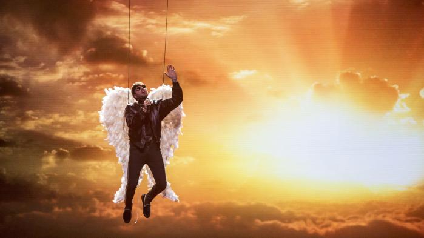
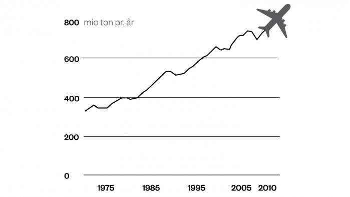
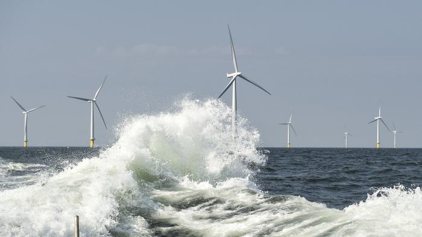
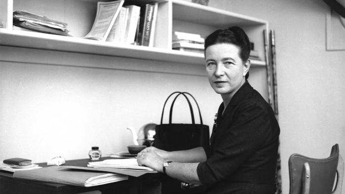

Kunstnerne skal stå ved sig selv i deres parodier
Populærkulturens parodier handler ikke så meget om dem og det, der parodieres, men om at kunstnerne bag dem – hvis de tør – kan vokse ved at udspille sider af sig selv
Sanger Malte Ebert lavede i 2016 en festparade af pophits via sin fiktive karakter Gulddreng, der rådyrkede bling-bling, blær og banaliteter. Han spejlede danske kolleger på hitlisterne, men med et lille frækt overdrev. »Der var helt klart en frustration over at sidde og lave seriøs musik og så se, hvad der blev skamspillet på P3,« udtalte Ebert til Euroman, da han havde lagt Gulddreng-projektet bag sig for at lave musik som sig selv.
Man kan sige om filmskoleeleven Anna Juul, at hun i ly af sin fiktive persona, digterparodien Veronika Katinka Martzen, lige nu driller et dansk digtermiljø. Juuls satiriske karakter Veronika Katinka Martzen, der løbende er gæst i Radio24syvs Den Korte Radioavis, har nemlig for nylig udgivet ’digtromanen’ Jeg bruger min krop som et møbel. Som led i boglanceringen gav hun et fiktivt interview til Berlingske, hvor hun
Det har sin pris at flyve – vil nogen betale den?
Det tager i bedste fald årtier at gøre flyvningen klimavenlig. Mens vi venter, må vi flyve mindre, siger klimaforskere. Afgifter kunne være et redskab, men luftfartsindustrien stritter imod
Flyvning er hårdt ved klimaet, og luftfartsindustrien ved det. I dag er luftfartens andel af den globale klimabelastning ikke stor – op mod fem pct., når både CO2 og andre kilder i udstødningen medregnes – men det er en sektor i hastig vækst, og med god fart på den grønne omstilling i andre sektorer kan luftfartens del af klimaproblemet efterhånden blive meget stor. Ifølge nogle analyser kan luftfarten på sigt komme til at beslaglægge 25-50 pct. af det samlede CO2-budget, som verden har tilbage, hvis Parisaftalens klimamål skal holdes.
Staten tjener 914 mio. kroner på klimakvoter, men Finansministeriet vil ikke øremærke pengene til grøn omstilling
Når staten tjener store summer på, at virksomheder kan øge deres CO2-udledning, er det ifølge to miljøorganisationer oplagt, at pengene tilbageføres til grøn omstilling. I EU går pengene netop til klimatiltag, hvilket får ros af blandt andre klimaministeren – men i Danmark afviser Finansministeriet en tilsvarende ordning
Staten tjener 914 mio. kroner på klimakvoter. I det lys er det helt oplagt at bruge provenuet på at støtte omstilling af den CO2-tunge del af økonomien, mener Claus Ekman, direktør i miljøorganisationen Det Økologiske Råd. ’914 mio. svarer eksempelvis til den årlige støtte for et par havvindmølleparker,’ siger han.
Det andet køn er stadig iblandt os
I en tid, hvor feminisme er blevet et modeord, tilbyder ny og revideret udgave af ’Det andet køn’ os en kærkommen mulighed for at blive mindet om, hvad det er, vi kæmper for
Det er sikkert overflødigt at nævne, men nu gør jeg det alligevel: Vi står ikke på sikker grund lige nu. Vi befinder os endnu en gang – nærmere bestemt for fjerde gang – i feminismens storm og bølgefavn. Feminismens fjerde bølge er over os lige nu, og selv om metaforer aldrig er uskyldige og altid bør vække mistanke, er det indiskutabelt, at der igen er kommet et øget fokus på kønspolitiske spørgsmål og kønsbaseret ulighed og diskrimination, senest tydeliggjort ved #Metoo. Desuden er det i dag blevet cool at identificere sig som feminist, særligt som ung og på de sociale medier. At kalde sig feminist på Instagram signalerer politisk bevidsthed og sympatisk personlighed – og det skaffer følgere.
Captain Marvel kan tørre røv med Superman
Anna Boden og Ryan Flecks ’Captain Marvel’ er en velformet ’origin story’ og en frisk og underholdende superheltefilm om en ung kvinde, der finder ud af, at hun er meget andet og mere, end hun altid har fået at vide
Cirka midtvejs i Captain Marvel kunne jeg ikke lade være med at smile – eller måske var det snarere et bredt og svært tilfreds grin over, hvor god en film det var, og hvordan jeg fik mindelser om dengang i slutningen af 1970’erne, hvor jeg første gang så Christopher Reeves udgave af manden af stål flyve. For Captain Marvel alias Carol Danvers er simpelthen kvinden af stål. Hun har superkræfter, hun kan skyde energistråler med hænderne, hun kan flyve, og så er hun rapkæftet og sarkastisk, så det batter.